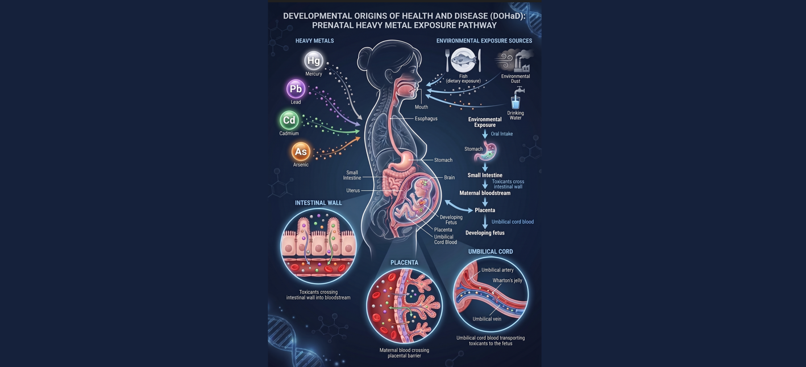

DOHaD Exposure Intelligence Platform
A comprehensive research database for Developmental Origins of Health and Disease (DOHaD). Explore complex temporal and geographical associations between early-life environmental exposures—such as heavy metals and air pollution—and developmental outcomes.
Explore DatabasePlatform Insights
Hover over the cards below to explore the detailed breakdown of the DOHaD research repository.
--
Total Studies
By Toxicant
- Loading...
--
Unique Countries
Top Regions
- Loading...
--
Year Range
Spanning decades of environmental health research.
Our Vision
- To establish the global standard for tracking environmental exposures during critical developmental windows.
- To empower researchers and clinicians to uncover definitive links between early-life toxicants and long-term disease.
- To drive evidence-based policy changes that protect the health of future generations worldwide.
Our Mission
- Aggregating and harmonizing disparate, siloed global research data into a unified, accessible intelligence platform.
- Providing advanced visual analytics and statistical tools to rapidly highlight geographical and temporal trends in heavy metal pollution.
- Facilitating urgent cross-disciplinary collaboration among toxicologists, epidemiologists, practitioners, and regulatory bodies.

Latest Research & News
Live feed of top US health and medical headlines.
Research Database
Search and filter studies by various parameters.
Analytics Dashboard
Visual overview of the customized dataset.
Studies per Year
Studies per Country (Maps)
Distribution by Exposure
Dose Distribution
Our Team
The researchers and developers behind the platform.
Dr. Jane Doe
Principal Investigator
Expert in environmental epidemiology and DOHaD mechanisms.
John Smith
Lead Developer
Specializes in data visualization and health informatics.
Alice Johnson
Data Analyst
Focuses on geographic trends and statistical modeling.
About the Project
Understanding the impact of early-life environmental exposures.
The Developmental Origins of Health and Disease (DOHaD) hypothesis suggests that environmental exposures during critical windows of development—such as prenatal and early postnatal periods—can induce physiological changes that influence risk for diseases later in life.
The DOHaD Exposure Intelligence Platform is designed to aggregate, analyze, and visualize global research data. By harmonizing disparate studies on heavy metals and air pollution, we aim to provide researchers, clinicians, and public health officials with actionable insights into geographic and temporal trends.
Platform Dataset Composition